Field briefing · public internet sources only
Public operators do not publish audited per-lot revenue. Every dollar figure in this report is an estimate unless a source says otherwise. Estimates use only public internet data: official stall counts, posted rate cards, and occupancy evidence from city or academic studies. Park&Pay receipts, sessions, and lot counts are excluded from all rankings and dollar totals. Official prepaid stadium inventories (for example SeatGeek lots at AT&T Stadium) are excluded from QR walk-up rankings. High visitor counts do not mean lots are full.
Houston is #1 among Houston, San Antonio, Austin, Dallas, and Fort Worth for visitor-driven paid-parking dollars on the public evidence in hand — both as a city and at the single-facility level.
The ranking below is a documented-facility floor: only facilities with a published stall count and a posted or clearly sourced rate card, with occupancy set from studies rather than assumed full. It is not a census of every private lot in each city. Austin and Dallas cannot be given a primary dollar total because their largest visitor QR clusters do not have official public rate cards; labeled sensitivities for those clusters are shown after the table and are not folded into the ranking.
| City | Low | Base | High | Weekday $ (base) | Weekend $ (base) |
|---|---|---|---|---|---|
| 1. Houston | $4,685,999 | $7,708,693 | $11,131,304 | $5,409,309 | $2,299,385 |
| Documented floor: Avenida North (1,848) + GRB South (891). Tundra Garage is a separate sensitivity (event rates unpublished). | |||||
| 2. Fort Worth | $2,713,481 | $4,071,214 | $5,649,876 | $1,378,948 | $2,692,267 |
| Documented floor: official Stockyards lots (1,152 spaces) + Universal Foch Lot (246). Weekend-heavy because official Fri-Sun rates are $22.50. | |||||
| 3. San Antonio | $2,649,013 | $3,580,273 | $4,521,466 | $2,972,008 | $608,267 |
| Documented floor: six city facilities (Houston Street, St. Mary's, Library, Marina, Alamo Lot, Market Square). Low posted rates and a 53% Fiesta peak cap the dollars. | |||||
| 4. Austin (incomplete) | — | — | — | — | — |
| No primary dollar total: the largest published Scan-to-Pay cluster (~1,400 Travis County spaces) does not have a consistent public rate card. See the labeled sensitivity below. | |||||
| 5. Dallas (incomplete) | — | — | — | — | — |
| No primary dollar total for visitor-driven lots: Lower Greenville's ~1,000 spaces lack an official public rate card. Downtown directory density is mostly office / monthly. | |||||
Tundra Garage at Toyota Center has 2,478 published spaces and ParkMobile reservations, but event rates are not published as a year-round card. A labeled assumption (70–90 event days at an assumed $25–$50 event rate, plus light non-event use) produces about $4,946,088 in the base case (range $2,173,206–$9,850,050). Adding that range would take Houston’s city total to roughly $12,654,781 base. Because the rate is assumed, Tundra is a sensitivity, not part of the primary city floor, and it is not treated as the QR walk-up #1 lot.
Visit San Antonio reported 40.2 million visitors in 2025 — second only to Houston’s 53.9 million city visitors (2024). That volume does not fill downtown parking. The first full downtown parking study in a decade, reported by Axios (March 23, 2026) and CultureMap, found that even on a Fiesta 2025 Saturday night, peak occupancy was only 53% citywide — nearly half empty at the peak. City rates are low ($3/hour with a $10 daily cap at Houston Street Garage; $5 evenings and weekends at St. Mary’s; $15 event; meters free after 6 p.m. and all day Sunday). The documented city-facility floor is $3,580,273, and the dollars are weekday-heavy ($2,972,008 vs $608,267 weekend) because weekend posted rates drop.
Visit Fort Worth / Tourism Economics counted 11.7 million city visitors in 2025 (people traveling 50 or more miles), the smallest of the five cities. What Fort Worth does have is an unusually complete official rate card and stall list for the Stockyards. At weekend-heavy occupancy (not 55% every day of the year), the official Stockyards lots plus Foch still produce a documented floor of $4,071,214, with weekend dollars larger than weekday dollars ($2,692,267 Fri–Sun vs $1,378,948 Mon–Thu) because the official Friday–Sunday rate is $22.50. That is enough to place Fort Worth second on the documented floor — an artifact, in part, of better public rate data — but not enough to overtake Houston. Individual Stockyards lots, especially Lots 2 and 3 (360 spaces, base $1,125,058), are among the highest-earning typical QR walk-up lots in the state.
Austin has the most confirmed or likely QR lots in the public opportunity index (40) and a 1,400-space Travis County Scan-to-Pay cluster, but per-garage rates were often unpublished. Dallas has the densest operator directory (especially PSA), but much of that inventory is office or monthly; Lower Greenville’s ~1,000 spaces across 23 Universal Scan-to-Pay lots lack an official public rate card. A file that circulated as a “2019 Dallas downtown occupancy” study was in fact a Half Moon Bay, California survey and is not used.
| Labeled sensitivity only | Low | Base | High | Weekday $ (base) | Weekend $ (base) |
|---|---|---|---|---|---|
| Austin — 1,400 Travis County spaces, assumed rates | $1,874,460 | $3,041,640 | $4,772,754 | $1,534,680 | $1,506,960 |
| Assumption only, excluded from the primary ranking: weekday 261 days × 25/35/45% occupancy × $10/12/15; weekend 104 days × 40/50/60% occupancy × 1.1/1.15/1.2 turns × $15/18/22. Some of these assets are evening-only. | |||||
| Dallas — 1,000 Lower Greenville spaces, assumed $10 and 50% paid after validation | $356,800 | $573,000 | $797,100 | $261,000 | $312,000 |
| The $10 figure is anecdotal, not an official Universal card. Validation may cut paid share; 50% paid is an estimate. Even at the high end, this cluster does not threaten Houston’s documented floor. Deep Ellum lots lack published stall counts and are omitted. | |||||
If those Austin assumptions were treated as real, Austin would sit near San Antonio and still below Houston, and it might or might not pass Fort Worth depending on how many additional unpublished PMC lots are actually busy visitor facilities. That uncertainty is why Austin is not assigned a primary rank above or below Fort Worth on dollars.
An earlier public-data index (official visitor totals × confirmed or likely QR / pay-by-phone lots × a typical posted daily rate) already placed Houston, Austin, and Dallas above Fort Worth and did not use Park&Pay data. It is a scale index, not an occupancy-adjusted revenue model.
| City | Visitors (millions) | QR-class lots | Typical rate (est.) | Index |
|---|---|---|---|---|
| Houston | 53.9 — 2024 city visitors (Houston First / TE) | 30 | $12 | 19,404 |
| Austin | 30.2 — Travel Texas 2025 domestic regional (different definition) | 40 | $15 | 18,120 |
| Dallas | 27.7 — 2024 (Visit Dallas / TE) | 39 | $12 | 12,964 |
| San Antonio | 40.2 — 2025 (Visit SA, Nov 12, 2026) | 17 | $10 | 6,834 |
| Fort Worth | 11.7 — 2025, 50+ miles (Visit FW / TE) | 36 | $12 | 5,054 |
The split uses calendar structure and posted rate windows, not an assumption that weekends are automatically busier in dollars.
ParkHouston’s May 4, 2023 council slides map 6 p.m.–midnight curbside occupancy in Downtown and East Downtown. Weekday evenings are mixed: many blocks under 50%, a band of 50–79%, and a few cores over 80%. Weekend evenings show more medium and peak segments, especially toward the downtown core and EaDo, but large stretches remain under 50%. Those maps describe on-street curbside conditions, not garage occupancy, and are used as directional evidence that evenings are not uniformly full.
Among facilities with published stall counts and a rate basis, Avenida North Garage in Houston is #1 on the base estimate ($5,395,864; range $3,353,455–$7,855,981). It is pay-by-phone capable (ParkMobile / ParkWhiz) but is ticket-on-entry with kiosk payment, not a typical QR walk-up lot.
The highest typical QR / scan-to-pay walk-up lot documented in this pass is official Stockyards Lots 2 and 3 in Fort Worth (PMC Pay, 360 spaces at 140 E Exchange Avenue; base $1,125,058, range $754,848–$1,564,308). Lot 3’s separate capacity is not published; 360 may understate if Lot 3 is additional.
Tundra Garage may rival or exceed Avenida North under aggressive event-rate assumptions, but those rates are not a published year-round card, so it is not used as the #1 finding.
| # | Lot | City | Spaces | Low | Base | High | Weekday | Weekend |
|---|---|---|---|---|---|---|---|---|
| 1 | Avenida North Garage (Discovery Green / GRB campus) Houston First (Avenida Houston) / ParkMobile / ParkWhiz | Houston | 1848 | $3,353,455 | $5,395,864 | $7,855,981 | $3,781,452 | $1,614,413 |
| Official posted: $15 (0-1 hr), $25 (1-2 hr), $34 (2-4 hr), $45 daily maximum. Billing cycle typically resets ~2 a.m. Kiosk + reservation; not typical QR walk-up. | ||||||||
| 2 | Tundra Garage (Toyota Center) Toyota Center / ParkMobile (reservations); event operator | Houston | 2478 | $2,173,206 | $4,946,088 | $9,850,050 | $2,525,259 | $2,420,829 |
| Event-variable; official public pages do not publish a single year-round card. Dollar estimates below use a labeled assumed event rate and should be read as a wide range, not a measured figure. Event-rate assumption — wide uncertainty. | ||||||||
| 3 | GRB South Garage Houston First (Avenida Houston) / ParkMobile / ParkWhiz | Houston | 891 | $1,332,544 | $2,312,829 | $3,275,323 | $1,627,857 | $684,972 |
| Same official card as Avenida North: $15 / $25 / $34 / $45 daily maximum. Kiosk + reservation; not typical QR walk-up. | ||||||||
| 4 | Houston Street Garage City of San Antonio / SAPark | San Antonio | 900 | $962,550 | $1,273,266 | $1,577,196 | $1,057,050 | $216,216 |
| Official example card: $3/hour with a $10 daily cap (Houston Street Garage). Meters are free after 6 p.m. and all day Sunday; some city garage promotions (free after 5 p.m. Tuesdays) also apply. Event rates may be higher. | ||||||||
| 5 | Lot 2 / Lot 3 PMC Pay | Fort Worth | 360 | $754,848 | $1,125,058 | $1,564,308 | $355,680 | $769,379 |
| Official posted rates as of page fetch 2026-11-15: Mon–Wed $12.50, Thu $17.50, Fri–Sun $22.50, overnight $32.50, each plus sales tax and service fee. Premium lots and special events may be higher. Credit card only, no cash. Source: https://fortworthstockyards.com/parking/ | ||||||||
| 6 | St. Mary's Garage City of San Antonio / SAPark | San Antonio | 704 | $752,928 | $995,977 | $1,233,718 | $826,848 | $169,129 |
| Official: $5 evenings and weekends; $15 event. Free parking is sometimes offered on Majestic Theatre nights except major Broadway / sold-out performances. Weekday daytime cap is treated as $10 in the estimate where a visitor uses the garage by day (same city-garage daily-cap exam | ||||||||
| 7 | Lot 4 PMC Pay | Fort Worth | 245 | $513,716 | $765,665 | $1,064,598 | $242,060 | $523,605 |
| Official posted rates as of page fetch 2026-11-15: Mon–Wed $12.50, Thu $17.50, Fri–Sun $22.50, overnight $32.50, each plus sales tax and service fee. Premium lots and special events may be higher. Credit card only, no cash. Source: https://fortworthstockyards.com/parking/ | ||||||||
| 8 | Lot 6 PMC Pay | Fort Worth | 203 | $425,650 | $634,408 | $882,096 | $200,564 | $433,844 |
| Official posted rates as of page fetch 2026-11-15: Mon–Wed $12.50, Thu $17.50, Fri–Sun $22.50, overnight $32.50, each plus sales tax and service fee. Premium lots and special events may be higher. Credit card only, no cash. Source: https://fortworthstockyards.com/parking/ | ||||||||
| 9 | Lot 5 PMC Pay | Fort Worth | 200 | $419,360 | $625,032 | $869,060 | $197,600 | $427,432 |
| Official posted rates as of page fetch 2026-11-15: Mon–Wed $12.50, Thu $17.50, Fri–Sun $22.50, overnight $32.50, each plus sales tax and service fee. Premium lots and special events may be higher. Credit card only, no cash. Source: https://fortworthstockyards.com/parking/ | ||||||||
| 10 | San Antonio Marina Garage City of San Antonio / SAPark | San Antonio | 465 | $356,608 | $509,891 | $665,834 | $424,778 | $85,114 |
| City garage; peer published cards ($10 weekday cap / $5 evenings-weekends) used and labeled as an assumption. | ||||||||
| 11 | Foch Lot Universal / ParkChirp | Fort Worth | 246 | $297,968 | $471,028 | $644,090 | $240,772 | $230,256 |
| Day $5/hour, $20 maximum; weekend $20 flat. LPR + mobile. Fetched from Universal facility materials, 2026-11-15, America/Chicago. | ||||||||
| 12 | San Antonio Library Garage City of San Antonio / SAPark | San Antonio | 428 | $328,233 | $469,319 | $612,853 | $390,978 | $78,341 |
| City garage; published example cards are $3/hr with a $10 daily cap and $5 evenings/weekends at peer city garages. Those peer rates are used here and labeled as an assumption. | ||||||||
| 13 | Horseshoe Lot PMC Pay | Fort Worth | 75 | $157,260 | $234,387 | $325,898 | $74,100 | $160,287 |
| Official posted rates as of page fetch 2026-11-15: Mon–Wed $12.50, Thu $17.50, Fri–Sun $22.50, overnight $32.50, each plus sales tax and service fee. Premium lots and special events may be higher. Credit card only, no cash. Source: https://fortworthstockyards.com/parking/ | ||||||||
| 14 | Market Square Garage City of San Antonio / SAPark | San Antonio | 177 | $164,362 | $225,286 | $287,083 | $184,788 | $40,498 |
| Peer city-garage rates ($10 weekday cap / $5 evenings-weekends) used and labeled as an assumption. | ||||||||
| 15 | Reserve Lot PMC Pay | Fort Worth | 46 | $96,453 | $143,757 | $199,884 | $45,448 | $98,309 |
| Official posted rates as of page fetch 2026-11-15: Mon–Wed $12.50, Thu $17.50, Fri–Sun $22.50, overnight $32.50, each plus sales tax and service fee. Premium lots and special events may be higher. Credit card only, no cash. Source: https://fortworthstockyards.com/parking/ | ||||||||
Galveston Seawall is a city PayByPhone program (location 5004), not a single lot, and is not ranked as one. Lower Greenville is about 23 lots and about 1,000 spaces, not one lot. AT&T Stadium official lots stay out of this ranking because they are prepaid / reserved, not QR walk-up.
The formula for a documented lot is:
Annual $ ≈ spaces × days × occupancy × turnover × posted or blended rate, computed separately for weekday and weekend (or, for Stockyards, Mon–Wed, Thursday, and Fri–Sun), then added. Tax and service fees are excluded. Low / base / high change occupancy and, where warranted, turnover — not visitor counts.
Visitor totals were not multiplied by a made-up “cars per visitor” factor. Official prepaid stadium lots were not mixed into QR walk-up ranks. Park&Pay live receipts were not used as a benchmark.
The public export (Park&Pay excluded) now includes the official convention-campus and San Antonio city facilities added for this briefing, plus the prior operator directories.
Confidence labels remain: Confirmed QR; Likely QR; Likely pay-by-phone; Operator-listed, pay method unverified; and program-level confirmed pay-by-phone or pay-by-app. PSA and similar directories include facilities whose pay method was not verified lot by lot.
The official Texas directory, as compiled November 15, 2026, America/Chicago, lists 40 lots: Dallas 34 and Fort Worth 6. There were no Houston lots on that official directory.
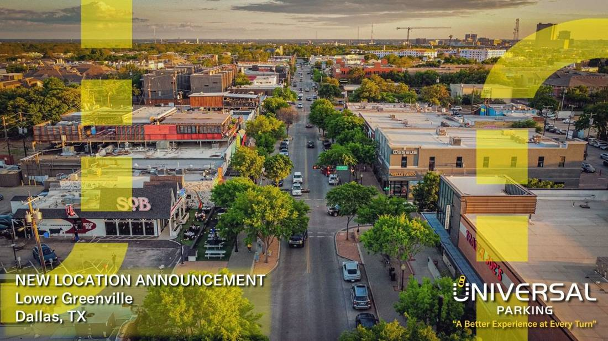
The official Texas directory lists 225 facilities, mapped in this briefing’s KML / CSV. Pay method is not verified lot by lot; some cities have documented PSA ParkMobile zone ranges. Official stadium entries remain visible in the directory and off the QR walk-up revenue ranking.
By city: Dallas 116, El Paso 33, Fort Worth 25, Houston 14, Austin 12, Arlington 8, San Antonio 7, Wichita Falls 4, Frisco 2, Canutillo 1, Little Elm 1, Bedford 1, Denton 1.
No field close-up of a PSA QR sign face was located in this pass. The company site shows city and brand photography and a ParkChirp badge, not a signage specification sheet.
122 lots in the public export, including the official Fort Worth Stockyards tourist lots (Confirmed QR, official rate card). Other cities: Austin 34, Houston 27, Fort Worth 25, San Antonio 16, Waco 7, Corpus Christi 4, Dallas 3, College Station 2, Arlington 1, Galveston 1, Georgetown 1, El Paso 1. Typical pay method on official Stockyards pages is scan-QR or text-to-pay, credit card only, no cash.
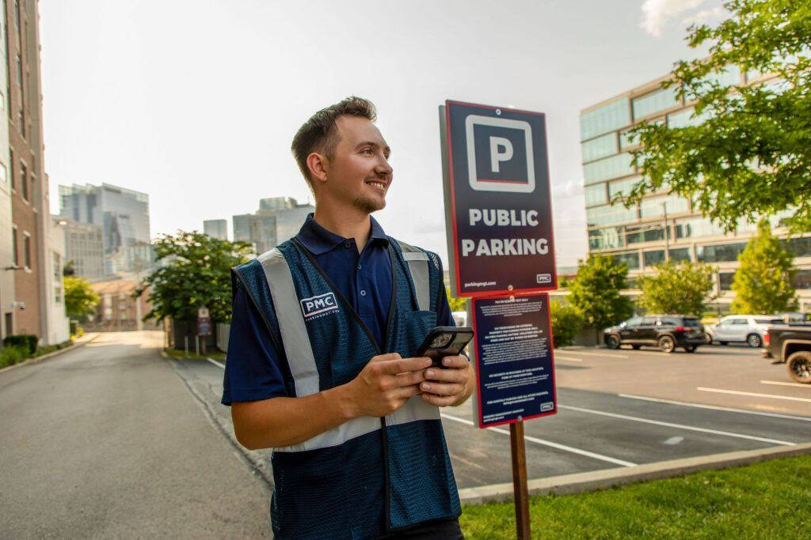
104 Texas facilities in the official directory: Dallas 51, Houston 18, Fort Worth 16, Austin 12, San Antonio 4, Plano 1, Cypress 1, Sugar Land 1. Travis County Scan-to-Pay covers five downtown Austin assets and about 1,400 spaces; some (Rusk, Granger) are described as evening windows rather than all-day public use. Published Houston examples include 3050 Post Oak ($4/hour to an $11 maximum plus tax) and 311 Austin Street (hourly $8 to 6 p.m.; evenings after 4 p.m. and weekends $20 plus tax, plus event rates). Stall counts were not published on those two Houston pages.
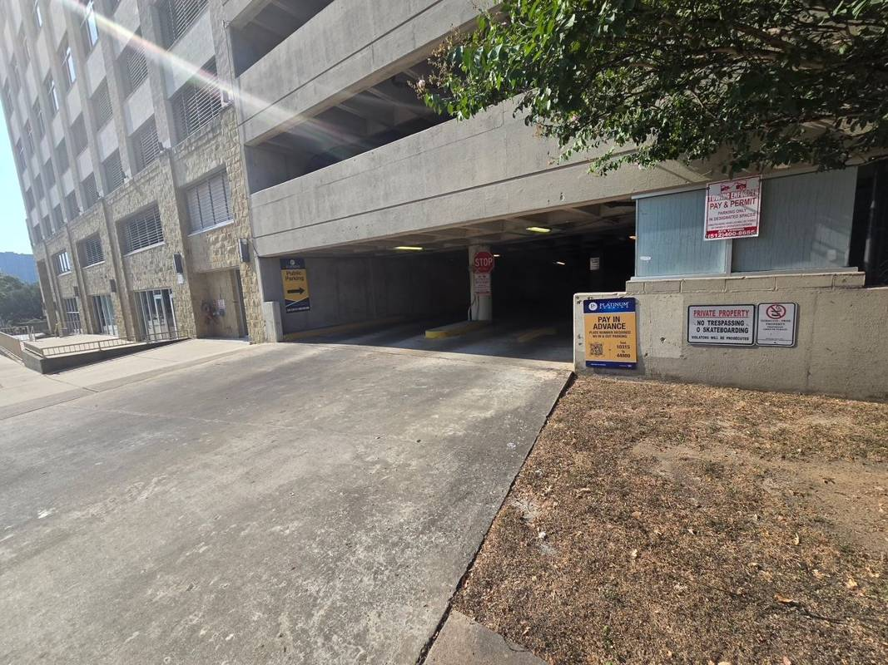
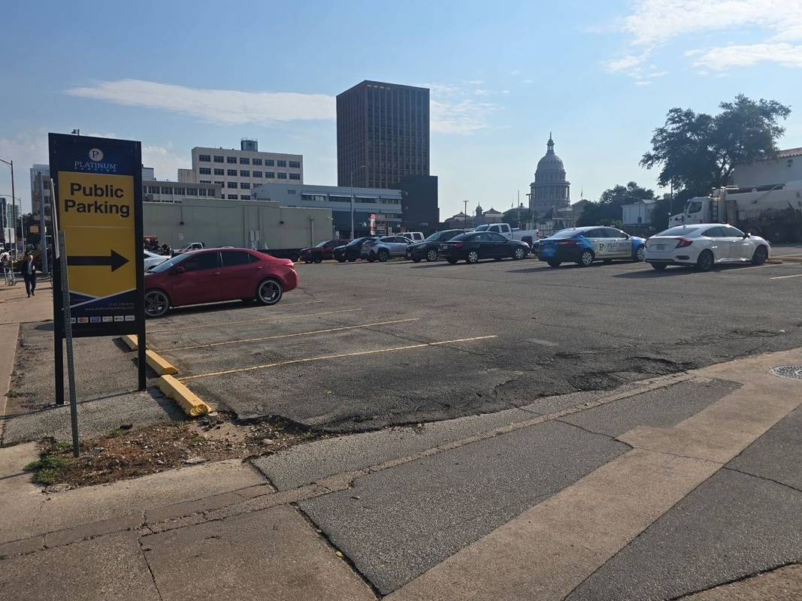
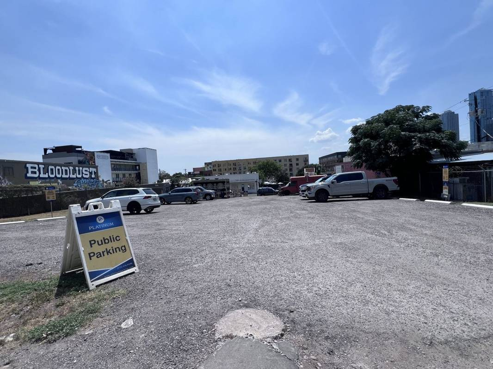
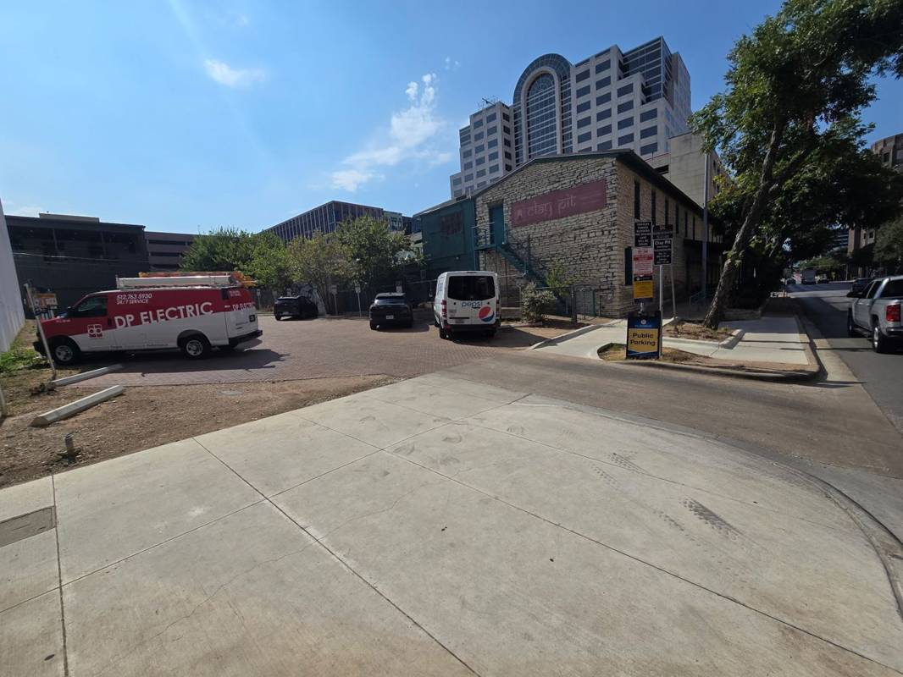
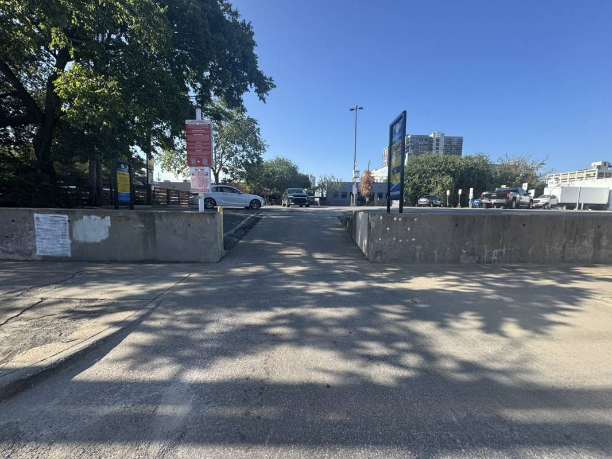
ParkHouston, ParkDallas, and several PSA zone ranges use ParkMobile-style location numbers. Official ParkMobile field kits observed in user photographs are typically about 12×18 inches and show a zone number, not a QR code. Austin’s Park ATX / Passport program, Houston’s ParkHouston, and San Antonio’s city meter program all told the public in late 2021 or early 2022 that official meters do not use QR codes; fraudulent stickers appeared on a small number of stations (KXAN: about 29 of 900-plus Austin stations; FOX 26: about 10 of 900-plus Park Houston stations; SAPD warned on December 20, 2021).
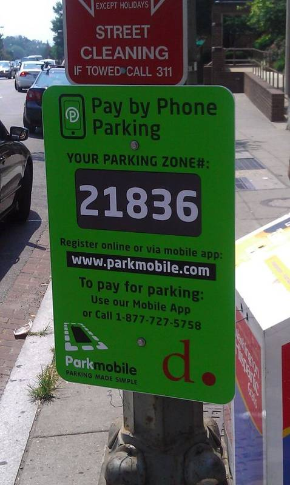
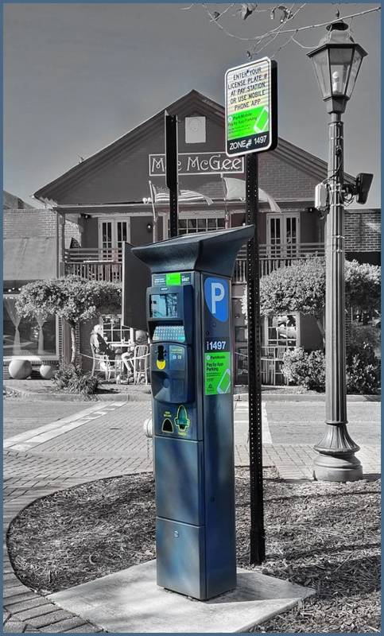
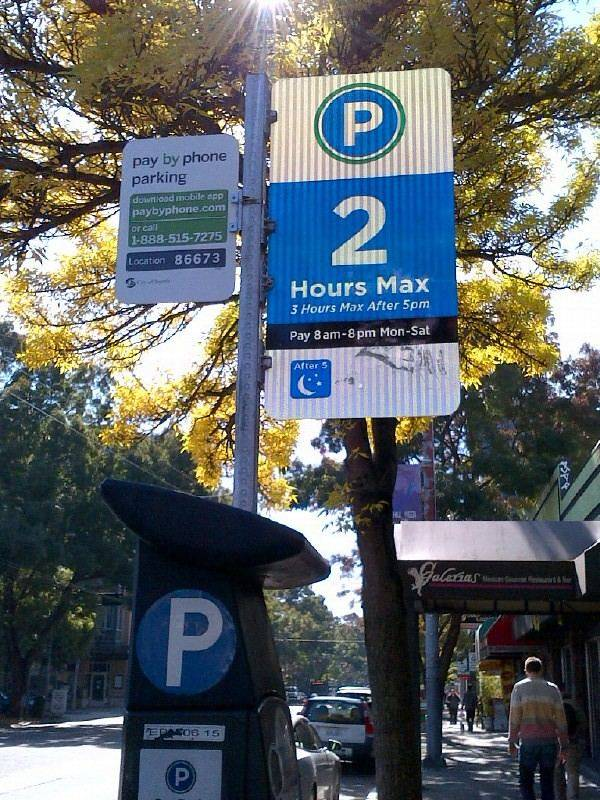
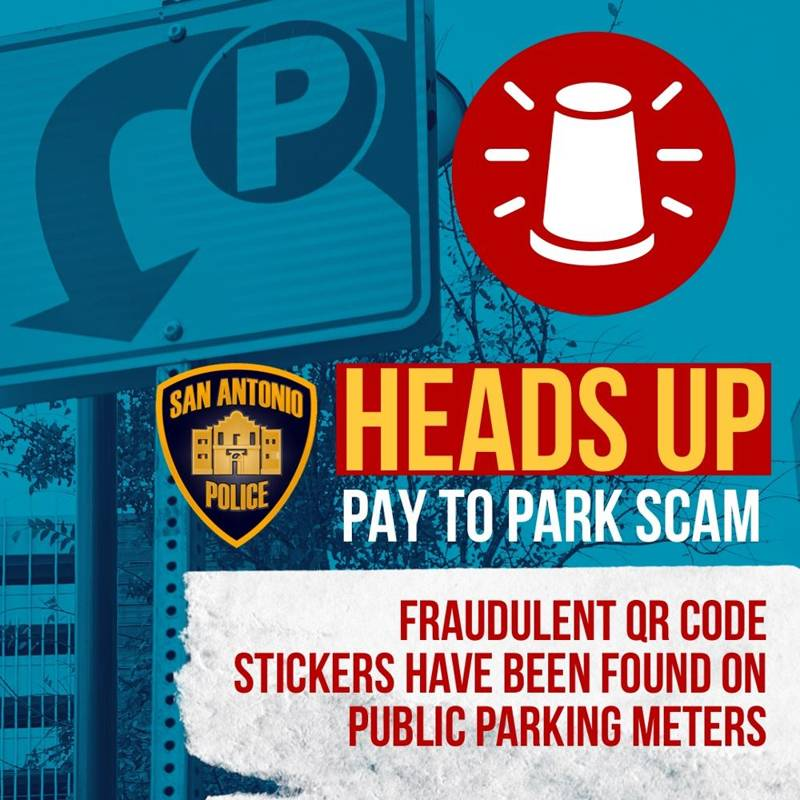
Flash, LAZ, Metropolis / SP+, ParkHub, and Passport appear in the broader market but did not yield Texas QR sign close-ups or complete official Texas lot rosters comparable to PSA, PMC, Platinum, or Universal in this pass. ParkChirp appears as Universal’s Scan-to-Pay / reservation layer and on a few non-Universal listings, which are filed under Other in the map.
Photos below are official company photographs or user-generated field photographs collected November 15, 2026, America/Chicago. Google Street View imagery was not downloaded. Stock, composite, or illustrative images were set aside and are not shown here. Size figures that are not taken from an official spec sheet are marked as estimates.
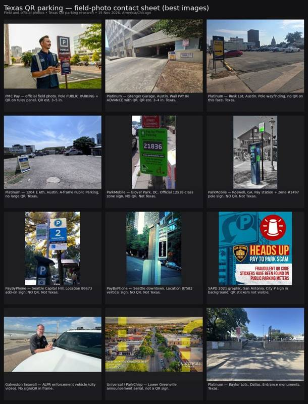
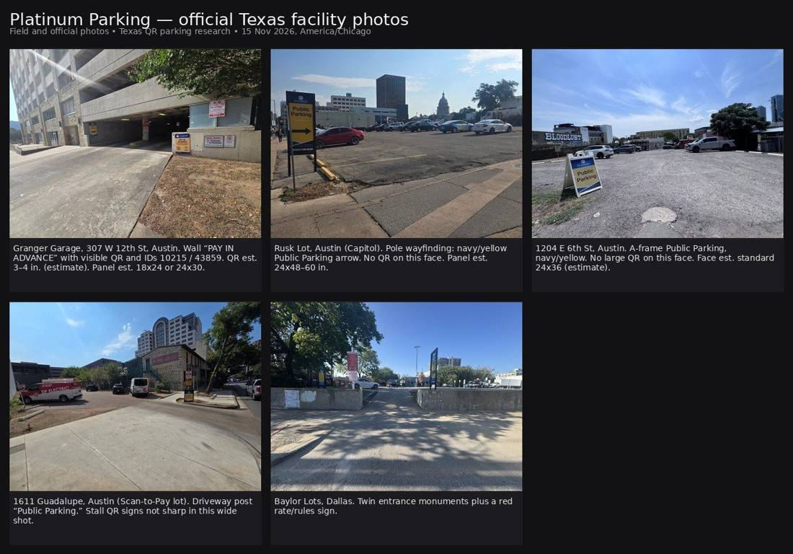
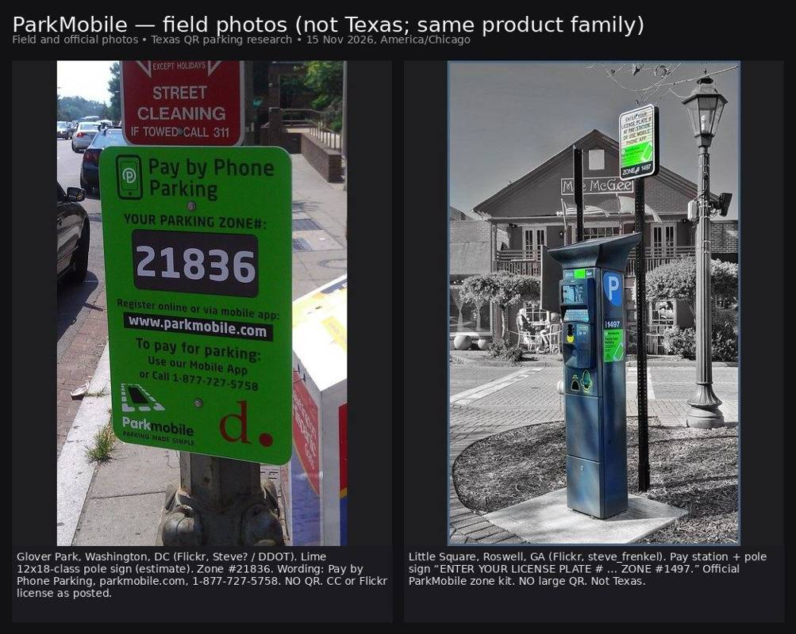
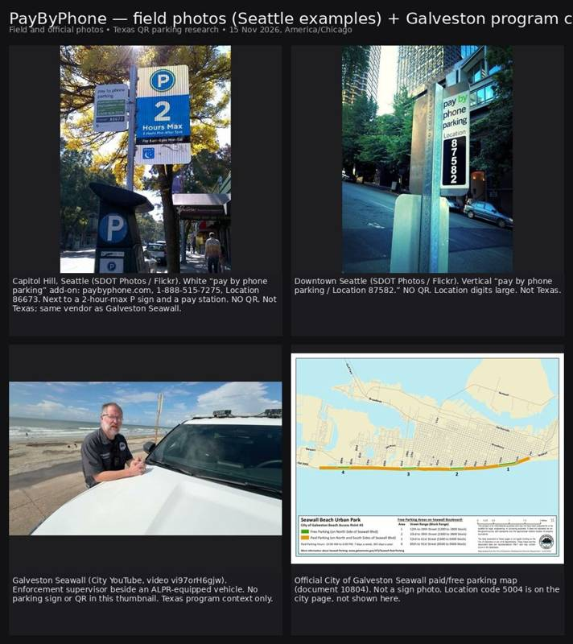
These files cover every lot in this briefing, including the top-earning facilities, all 40 official Universal lots, all 225 PSA facilities, all 122 PMC lots, and all 104 Platinum facilities, plus the added official campus and San Antonio city garages. Park&Pay rows are omitted. Coordinates are WGS84 decimal degrees.
KML KMZ CSV (lat, lon columns) GPX PDF of this report
KML folders: Top-earning single lots; Universal Parking; Parking Systems of America; PMC Pay; Platinum Parking; City and official venue; Other operators; Programs (the 10 citywide programs are not plotted as points). Each placemark lists name, operator, address, city, spaces, rates, estimated revenue when computed, and lat/lon in the description.
Geocoding: 503 of 503 lots geocoded (100%). 10 of 10 program rows not geocoded (citywide systems). Six previously missing street addresses were geocoded on November 15, 2026, America/Chicago with Nominatim, including typo corrections (Houston “Winburn” → Winbern; Dallas “2213n North Field”).
This briefing is web-visible sources only and is not a claim of completeness.